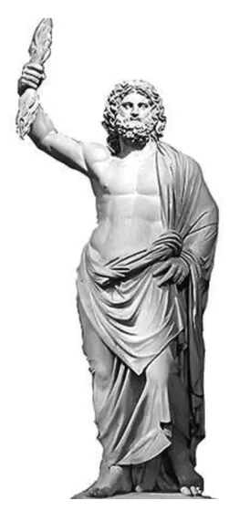

Entity Grimoire
 Zeus
Zeus
Preferred Places
- City
Preferred Vocations
- Father
- King
- Stranger
Domains & Sacred Objects
- Justice
- Oaths
- Sky, clouds
- Thunder & lightning
Overview
Zeus is the king of the Greek Olympian spirits, the wielder of the mighty thunderbolt. Scholarly debate rages as to whether he is an indigenous Greek spirit or whether he arrived with invading Achaeans in approximately 1200 BCE (partly because there's no consensus on exactly who the Achaeans are or where they came from).
Various mythic versions of Zeus' birth exist, although in all he is the hunted and protected Divine Child. Depending on the myth, baby Zeus, child of Gaia and Kronos, was nursed by a bear, dog, dove, goat, sow, or bees, all of whom may or may not be Nymphs in animal guise.
Zeus does not come to power because of his own superior strength and strategizing. His victory is owed to Gaia and her other children. Zeus received his signature thunder and lightning bolts from the Cyclopes after he liberated them from the pit of Tartarus. A later rebellion against Zeus led by Hera and Poseidon is ultimately foiled by the hulking presence of Briareus of the Hecatoncheires. Zeus expands his power via alliances with Gaia's daughters and granddaughters.
Magical Properties
Zeus is a voracious spirit: hungry for women, victory, power, and territory. Most of the romantic myths regarding Zeus and his seduction (or rape) of mortal women, usually described as princesses or queens, are mythic euphemisms for his mergers with local goddesses who were then demoted to the rank of mortals, albeit royal.
Zeus' ascendance to power accompanied and symbolizes a social sea-change in which men, especially fathers or patriarchs, are rulers. Zeus is a spirit of a new world order: a revolution where the male contribution to conception was understood as something that must be protected. Worship of Zeus embraces a social change in which the father is of greater significance than the mother.
Zeus is the lord of paternity. Myths recount his countless, fruitful liaisons with women, mortals and goddesses alike. The point of these myths isn't just to demonstrate that he's a player; those myths are a promise. Zeus bestows children like divine gifts, and not just any children, either. His descendents include heroes and the most beautiful woman in the world. Since he sowed his seed so prolifically, Zeus was also venerated as an ancestral spirit by many people, especially royalty.
Despite images of him sitting high above the clouds on Mount Olympus, Zeus was not a remote spirit but a communicative, oracular one. One could visit his shrines and solicit his advice. At his ancient shrine in Dodona, oracles were obtained by interpreting the sound of rustling leaves in his oak grove, understood to be his voice.
Manifestation
Zeus is a notorious shape-shifter. Favorite forms include bulls, snakes, and a distinguished, handsome man in his prime. Allegedly his true manifestation is a raging, incredibly bright, vivid flame, the equivalent of the flash from an atomic bomb, whose full impact mortals are unable to withstand (as happens in the myth of Semele).
Iconography
Zeus is usually envisioned as a powerful, curly-bearded man wearing a wreath of oak or olive leaves.
Attributes
Thunderbolt
Additional Notes
There are very few traces of Zeus among the persistent, surviving remnants of Greek Paganism. His role was essentially usurped or given to God. However, the concept of God as an enthroned, regal, white-haired, bearded man may derive from Zeus. Zeus can fulfill any request or petition. If he can't do it himself, he will order another spirit to do it for him.
Ellinais, or the Holy Association of Greek Ancient Religion Believers, received official state recognition and on 22 January 2007 was permitted to celebrate the nuptials of Zeus and Hera at the Temple of Olympian Zeus in Athens, the first openly practiced religious ceremonies at Zeus' temple since Paganism was abolished in the fourth century.
Zeus Ktesios in Hellenic Household Worship
Within the Hellenic household, Zeus is the second God encountered after Hestia. Under the epithet Ktesios, drawn from the word ΚΤΗΜΑ (possession), He is honoured as guardian of the family property and overseer of the prosperity of the Oikos. The title translates roughly as He of the possessions, of the estate, and of the goods kept within the house.
In the Classical Era His altar was typically placed in a storage area of the home, often an outdoor structure, where libations were the primary form of offering. Reports of libations to Zeus Ktesios far outnumber reports of blood sacrifice at His altar, which fits with His identification with the firkin used in domestic ritual. The storage rooms themselves held essential household goods such as food, clothing, woven material, wool, and animal skins. In some villages this practice persisted through the previous generation. These were not modern store rooms cluttered with broken or useless items, but reserves of what truly sustained the family.
As the form of goods that contribute to the wealth of the Oikos has shifted over the centuries, the worship of Zeus Ktesios may now be performed at the main altar or place of worship within the home, provided the practitioner understands wealth in a meaningful sense rather than the cruder modern equation of wealth with money, which is only a means of exchange. In rural settings, where older customs persist, the worship of Zeus Ktesios continues to follow the ancestral pattern on farms and in village households.
The Kadiskos
In certain traditions the worship of Zeus Ktesios is centred not on a fixed altar but on an object called a ΚΑΔΙΣΚΟΣ, or firkin, with which the God is directly identified. The kathiskos is a small bucket common to every Greek home, and because of its everyday utility no archaeological excavation has been able to distinguish a cult firkin from an ordinary household one. The fact that this vessel functioned as the equivalent of an altar explains why dedicatory inscriptions to Zeus Ktesios are so rarely found.
A preserved description gives precise instructions for preparing a firkin in His honour. An unused two-handled firkin is taken, and white wool together with yellow thread the colour of saffron is threaded through the handles, draped over the right handle, and brought across the front. Inside the vessel is placed whatever the household has on hand, together with what the rite names as ambrosia: pure water drawn from a fountain, oil, and an assortment of fruits.
It is necessary to make the symbol of Zeus Ktesios. We take an unused firkin with two handles through which we thread white wool and yellow thread, the colour of saffron, which we then throw over the right shoulder (handle) and place inside whatever we have as well as ambrosia. Ambrosia is pure water from a fountain and oil and all fruits. That is what we place inside.
The Communal Altar and the House Serpent
Zeus is also venerated at communal city altars under the epithet Ktesios, which mirrors the household form on a civic scale. An altar to Zeus Ktesios depicting a serpent has been recovered through archaeology, and this has led to His identification with the house snake, the guardian of the household stores. The serpent endures as a symbol of the inner sanctum of the home through late antiquity, and from there it passes into folk tradition, where it continues to be recognised in that protective role to the present day.
Zeus Êrkeios and the Boundaries of the Estate
A third title under which Zeus is honoured in the Hellenic home is Êrkeios. The Greek word ΕΡΚΟΣ designates a fence and, by widening association, the ground that the fence encloses. In ancient Athens that same word was used for the dwelling as well, until fence and house had become synonyms in everyday speech. Asking where a person lived could equally take the form of asking where their Zeus Êrkeios stood.
His altar stood outdoors, set in the inner courtyard that lay between the outer wall of the property and the walls of the residence itself. There Zeus is honoured as the One who watches over the estate and keeps everything within its bounds in His care. Surviving evidence about the rite is sparse. What is preserved is that it pertains to the physical ground of the household where the family gathers, and that kin who had passed long stretches away from the property offered Him sacrifice upon their return. Modern practice proceeds from this slim record.
If the home has no garden and no open ground at all, His worship can be carried out at the principal altar in the company of Hestia and Zeus Ktesios.
Role in Hellenic Household Worship

Within the household, offerings to Zeus include oak, eagle tokens, carnations, the olive branch, and styrax incense. The lightning bolt and the shield serve as His emblems. The colour linked to Him is purple. His sacred animals are the eagle, the bull, and the swan. The oak is the plant and fruit sacred to Him.